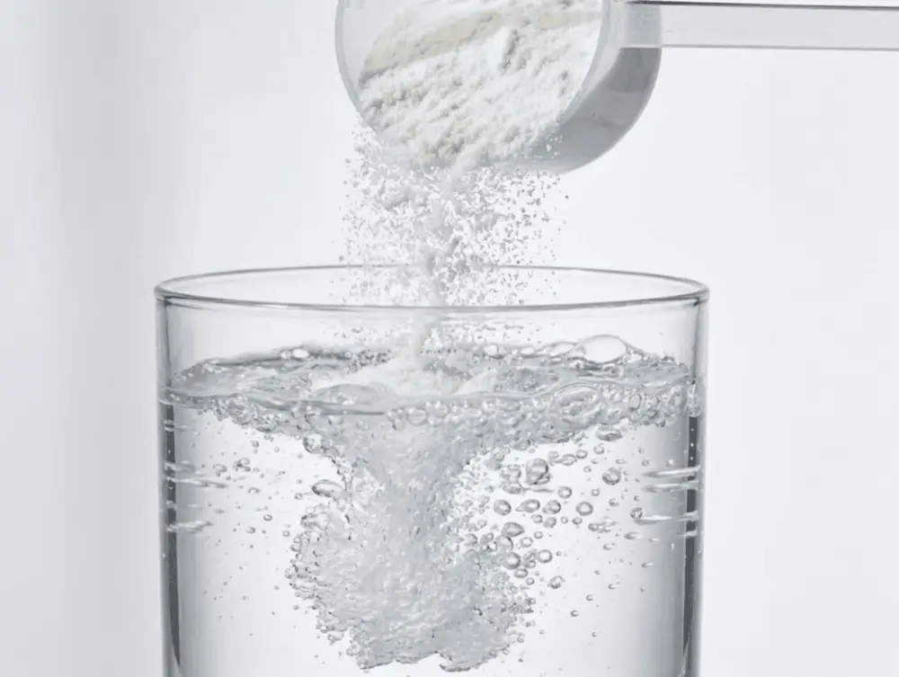
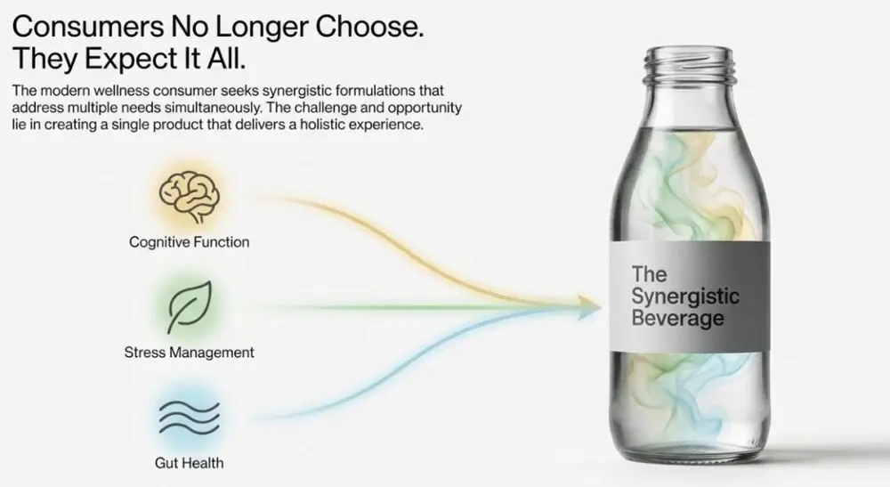
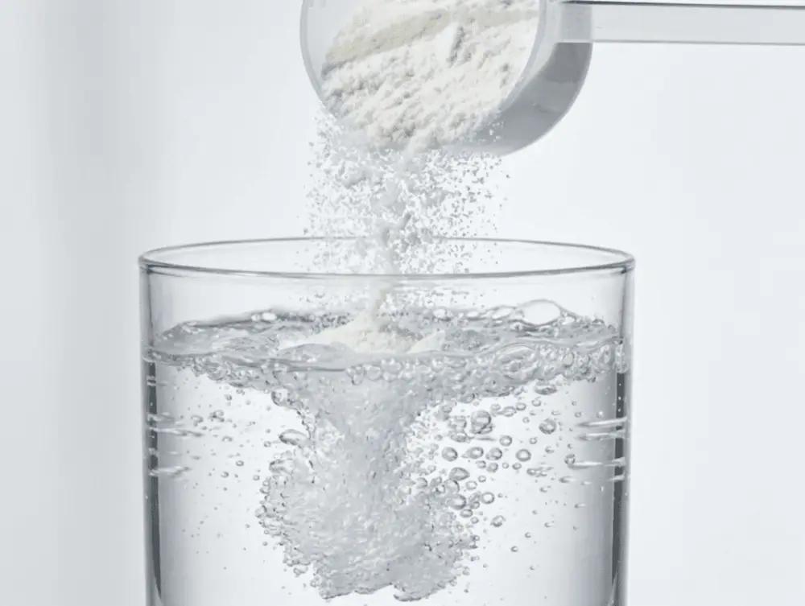
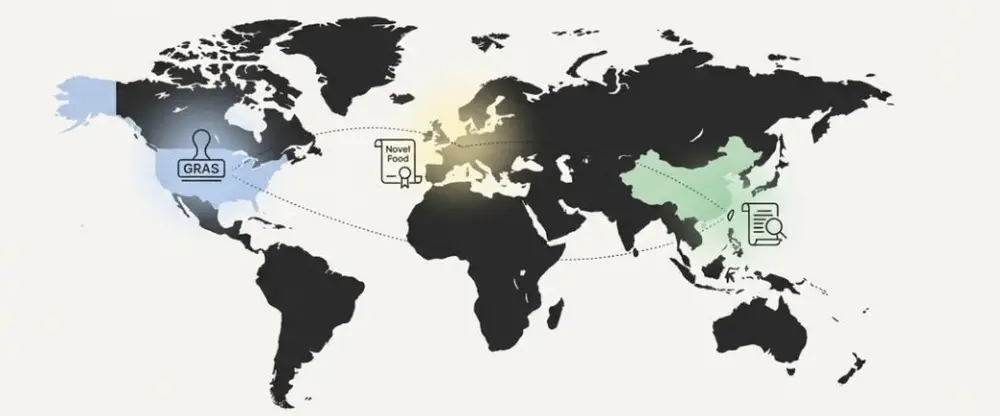

Articles / Tips & trends
The Rise of Functional Beverages: Sourcing Active Ingredients for 2026
2025-12-28 · Industry Trends, Industry Trends

A new generation of stevia variants is finally cracking the aftertaste problem that has plagued formulation scientists for years. But that’s just one piece of a much larger story unfolding in beverage R&D labs across the globe. As the functional beverage market races toward a projected value of $296 billion by 2034, the ingredient science powering this growth is becoming increasingly sophisticated—and the sourcing decisions brands make today will define their competitive positioning for years to come.
What’s particularly striking about the current landscape isn’t just the proliferation of functional claims, but the convergence of multiple wellness trends into single-serve formats. Consumers no longer want beverages that do one thing well; they want synergistic formulations that address gut health, cognitive function, and stress management simultaneously. For beverage developers working with tea-based platforms—including the rapidly evolving bubble tea segment—this represents both an unprecedented opportunity and a formidable technical challenge.
The Science Behind 2026’s Priority Active Ingredients
The functional ingredients commanding the most attention from R&D teams in 2026 fall into five distinct categories, each with unique formulation considerations and sourcing complexities.


Adaptogens and Nootropics: The Stress-Relief Frontier
Ashwagandha (Withania somnifera) and lion’s mane mushroom (Hericium erinaceus) have emerged as the adaptogens and nootropics of choice for beverage formulators. The appeal is straightforward: these ingredients address the number-one mental health concern consumers report wanting to improve—stress. ADM’s research indicates that 85% of global consumers believe a balanced approach to physical, mental, and emotional health is essential to vitality.
The formulation challenge with adaptogens lies in their distinctive flavor profiles. Ashwagandha’s earthy, slightly bitter notes can clash with delicate tea bases, requiring careful flavor masking strategies. Brands like Brighter A.M. have addressed this by combining KSM-66 ashwagandha with L-theanine and rhodiola in drink mixes that deliver what they call “calm focus without jitters.” The L-theanine, naturally present in green tea, provides a synergistic buffer that smooths out the adaptogen’s rough edges.
For bubble tea operators exploring functional formulations, flavored powder bases offer a practical vehicle for adaptogen incorporation. The inherent sweetness and complex flavor profiles of taro, matcha, and brown sugar bases can effectively mask adaptogenic bitterness while maintaining the indulgent experience consumers expect.
Gut Health Ingredients: Prebiotics, Probiotics, and Postbiotics
The gut health market is projected to exceed $32 billion by 2035, and for good reason—59% of consumers now believe gut health is crucial for overall wellbeing. But the science has evolved considerably beyond simple probiotic supplementation.
Prebiotics like inulin, fructooligosaccharides (FOS), and chicory root fiber are gaining ground because they feed existing beneficial bacteria rather than introducing new organisms. This sidesteps the viability challenges that have historically plagued probiotic beverage formulations, particularly in ambient-stable products. PepsiCo’s Pepsi Prebiotic Cola and Coca-Cola’s Simply Pop—both featuring chicory root fiber—signal that major players are betting on prebiotics as the more scalable gut health solution.
Postbiotics represent the newest frontier. These are the bioactive compounds produced during fermentation—enzymes, peptides, and short-chain fatty acids—that can be added to formulations after pasteurization. For hot-fill beverage applications and products requiring extended shelf stability, postbiotics eliminate the cold-chain dependencies that limit probiotic distribution.
| Ingredient Category | Key Compounds | Formulation Considerations | Best Applications |
|---|---|---|---|
| Prebiotics | Inulin, FOS, Chicory Root Fiber | Heat-stable, fiber content affects texture | RTD teas, sodas, keto-friendly syrups |
| Probiotics | Lactobacillus, Bifidobacterium strains | Requires refrigeration, pH sensitivity | Fresh-made beverages, cold-chain products |
| Postbiotics | Short-chain fatty acids, peptides | Heat-stable, no live cultures needed | Shelf-stable beverages, hot-fill applications |
Protein and Amino Acids: Beyond the Shake
Nearly 60% of global consumers are actively increasing their protein intake, and beverages have become a primary delivery vehicle. But the protein story in 2026 extends well beyond whey isolate. Glanbia Nutritionals reports that their BevWise® clear whey protein is enabling formulations that would have been impossible five years ago—high-protein sparkling waters and fruit-forward drinks that look nothing like traditional protein shakes.
Specific amino acids are also gaining standalone recognition. L-theanine, naturally occurring in Camellia sinensis, enhances focus without the jitters associated with caffeine—making it a natural fit for tea-based functional beverages. L-citrulline and BCAAs are finding their way into hydration formulations targeting active consumers.


Hydration-Enhancing Compounds
Hydration claims on new beverage launches have grown at an 18% compound annual growth rate, reflecting consumer recognition that water absorption efficiency matters as much as water consumption volume. Electrolyte optimization—particularly the sodium-to-potassium ratio—has become a key differentiator in sports and wellness beverages.
The emergence of konjac-based toppings in bubble tea applications offers an interesting parallel. Konjac glucomannan provides both texture and functional fiber benefits, potentially positioning bubble tea as a hydration-plus-satiety format that transcends traditional beverage categories.
Emerging Ingredients: Creatine and Lactoferrin
Two ingredients warrant close attention from forward-looking formulators. Creatine—traditionally associated with sports nutrition—is experiencing a 25.2% annual growth rate as research expands beyond athletic performance to cognitive health and healthy aging applications. Döhler Ventures has identified creatine as one of two “extremely important” ingredients they’re monitoring for beverage applications.
Lactoferrin, a multifunctional glycoprotein found in milk, shows promise for immune support, gut health, and antimicrobial applications. The primary barrier is scalability, but ingredient innovators are actively working to address this limitation.
Sourcing Strategies for Functional Beverage Ingredients
The sourcing landscape for functional ingredients presents unique challenges that differ significantly from conventional beverage ingredient procurement. Supply chain resilience, quality verification, and regulatory compliance require specialized expertise.
Quality Verification and Standardization
Adaptogenic herbs present particular standardization challenges. Ashwagandha potency, measured in withanolide content, varies significantly based on growing conditions, harvest timing, and extraction methods. KSM-66, the most extensively studied ashwagandha extract, maintains a standardized 5% withanolide content, but not all suppliers match this specification.
Understanding food additives and their functions becomes critical when incorporating novel functional ingredients. Encapsulation technologies—including spray drying, coacervation, and liposomal delivery—can improve bioavailability and stability of sensitive compounds, but these processing steps add cost and complexity.
Regulatory Considerations by Market
The regulatory landscape for functional ingredients varies dramatically by jurisdiction. In the United States, the FDA’s GRAS (Generally Recognized as Safe) framework governs novel ingredient approval, while the European Union applies the Novel Food Regulation. Asian markets, including Taiwan—where much of the world’s bubble tea ingredient innovation originates—maintain their own regulatory frameworks.
For brands sourcing from international suppliers, documentation requirements extend beyond Certificates of Analysis to include:
- Country of origin verification
- Heavy metal and pesticide testing results
- Microbial contamination panels
- Allergen cross-contact documentation
- Halal/Kosher certification where applicable
Partnering with established OEM manufacturers who maintain current regulatory documentation can significantly reduce compliance burden for brands entering functional beverage categories.


Formulation Approaches for Tea-Based Functional Beverages
Tea platforms offer inherent advantages for functional beverage development. The naturally occurring L-theanine in green tea provides a cognitive function baseline, while the antioxidant profile of black, green, and oolong teas supports additional health messaging.
Flavor Balancing Strategies
Functional ingredients often introduce off-notes that must be managed through careful formulation. Guilt-free powder formulations that incorporate reduced sugar profiles require particular attention to sweetness balance and mouthfeel maintenance.
Key flavor masking approaches include:
Complementary flavor pairing: Earthy adaptogens pair naturally with matcha, hojicha, and roasted barley notes. Bitter compounds can be counterbalanced with brown sugar or caramelized profiles.
Texture modification: Creamy mouthfeel from milk powder bases or cheese foam toppings helps mask bitter or astringent notes while improving overall sensory experience.
Sweetness optimization: Keto-friendly syrup formulations using monk fruit, erythritol, or allulose can deliver sweetness without the blood sugar impact that health-conscious consumers seek to avoid.
Stability Considerations
Many functional ingredients degrade under specific conditions that standard beverage processing creates. Vitamin C oxidizes in the presence of light and heat. Probiotics die during pasteurization. Certain botanical extracts lose potency when exposed to acidic pH levels common in fruit-based beverages.
Shelf life testing becomes essential when incorporating novel functional ingredients. Health booster formulations must maintain their functional claims throughout the product’s intended shelf life—a requirement that demands rigorous accelerated stability studies during development.
Market Positioning for Functional Bubble Tea
The global bubble tea market reached $3.96 billion in 2025 and is projected to hit $9.72 billion by 2035, with consumers increasingly expecting their indulgent beverages to deliver wellness benefits.
The non-dairy segment, valued at $1.36 billion in 2024, exemplifies this convergence. Plant-based alternatives naturally align with health positioning, and adding functional ingredients elevates these products to genuine wellness beverages. Premium syrup options made with real fruit juice support clean label positioning that health-focused consumers demand.
Building Your Functional Ingredient Supply Chain
Successful functional beverage development requires strategic supplier relationships that extend beyond transactional purchasing. Key considerations include:
Technical support access: Ingredient suppliers should provide application guidance, stability data, and formulation troubleshooting assistance.
Scalability assurance: Can your supplier meet your volume requirements as you scale from pilot to commercial production?
Regulatory documentation: Suppliers should maintain current safety dossiers and country-specific compliance documentation.
Innovation pipeline visibility: Understanding what’s coming next from your ingredient partners enables proactive product development.
For beverage operators exploring functional formulations, one-stop suppliers who provide both base ingredients and functional add-ins simplify development logistics while ensuring ingredient compatibility.
What This Means for Your 2026 Ingredient Strategy
The functional beverage revolution is no longer theoretical—it’s happening now, and the brands that establish reliable supply chains for high-quality active ingredients will capture disproportionate market share.
Three priorities should guide your sourcing decisions:
Prioritize science-backed ingredients with robust clinical evidence rather than fleeting wellness fads. Adaptogens like ashwagandha, prebiotics like inulin, and amino acids like L-theanine have research foundations that support sustainable product positioning.
Build supply chain resilience through diversified sourcing relationships and appropriate inventory buffers for ingredients with long lead times or seasonal availability constraints.
Invest in formulation expertise that bridges ingredient science with consumer-acceptable taste profiles. The most effective functional ingredients deliver nothing if consumers don’t enjoy drinking your product.
The intersection of beverage science and wellness is where the industry’s most exciting innovations are emerging. Whether you’re formulating RTD products for mass retail or developing signature drinks for artisanal tea shops, the functional ingredient decisions you make today will shape your competitive positioning for years to come.

FAQ
Adaptogens (ashwagandha), prebiotics (inulin, FOS), L-theanine, and clear whey protein are 2026 priorities. Ashwagandha addresses stress relief—85% of consumers prioritize holistic wellness. Prebiotics offer heat stability for ambient products. L-theanine provides calm focus without jitters. Clear whey protein enables high-protein fruit beverages. These ingredients have robust clinical evidence, meeting B2B demands for science-backed formulation solutions.
Quality suppliers provide standardized extracts like KSM-66 ashwagandha (5% withanolide content). Essential documentation: country of origin verification, heavy metal/pesticide testing, microbial panels, allergen statements, and Halal/Kosher certification. Understanding encapsulation technologies (spray drying, liposomal delivery) improves bioavailability. Partner with OEM manufacturers offering technical support to simplify regulatory compliance and ensure ingredient compatibility.
Prebiotics (inulin, chicory root fiber) excel due to heat stability and shelf stability. They feed beneficial bacteria, avoiding probiotic viability issues during pasteurization. Postbiotics—bioactive compounds from fermentation—work in pasteurized products without cold-chain needs. The gut health market projects $32+ billion by 2035, with 59% of consumers prioritizing gut health. Konjac toppings provide fiber and satiety benefits.
Use three strategies: complementary flavor pairing, texture modification, and sweetness optimization. Earthy adaptogens pair with matcha, hojicha, or roasted barley. Creamy mouthfeel from milk powder or cheese foam masks bitter notes. Keto-friendly syrups using monk fruit, erythritol, or allulose deliver sweetness without blood sugar impact. Stability testing is critical—functional ingredients degrade under light, heat, or acidic pH.
Yes, significantly. The U.S. follows FDA’s GRAS framework, the EU applies Novel Food Regulation, and Asian markets (including Taiwan) have distinct frameworks. International sourcing requires country of origin verification, heavy metal/pesticide testing, microbial panels, allergen documentation, and Halal/Kosher certification. Partnering with OEM manufacturers maintaining current regulatory documentation reduces compliance burden for brands entering functional categories.
Sources & References
- FDA Food Safety & Labeling Guidelines — Regulatory framework for functional ingredients
- Cornell Food Science Department — Bioactive compound research
- UC Davis Food Science & Technology — Fermentation and probiotic studies
- Institute of Food Technologists (IFT) — Industry standards and best practices
- McKinsey Global Food & Agriculture Practice — Market sizing and growth projections
- USDA Economic Research Service — Agricultural commodity data
- Innova Market Insights — Consumer trends and product launch data
- Precedence Research Functional Beverages Report — Market forecasting
About the Author
Dr. Wei-Lin Chen is a Product Development Specialist at YenChuan, Taiwan’s leading bubble tea ingredient manufacturer. With over 12 years of experience in beverage formulation and functional ingredient integration, Dr. Chen leads YenChuan’s R&D initiatives in developing next-generation tea-based wellness products. His research focuses on adaptogen stability in ready-to-drink formats and clean-label sweetening systems. When he’s not in the lab, you’ll find him exploring Taipei’s vibrant tea culture—always with an eye toward the next innovation.
Connect with YenChuan on LinkedIn.
Ready to Formulate Functional Beverages?
The science of functional ingredients is evolving rapidly, but navigating supplier qualification, regulatory compliance, and formulation optimization doesn’t have to be overwhelming. YenChuan has been partnering with beverage developers worldwide for over three decades, providing premium tea bases, functional powders, and specialty syrups that support wellness-forward product positioning.
Whether you’re exploring adaptogen integration, prebiotic formulations, or reduced-sugar platforms, our technical team can help translate ingredient trends into market-ready products.
Let’s discuss your functional beverage vision. Book a consultation with our R&D team →